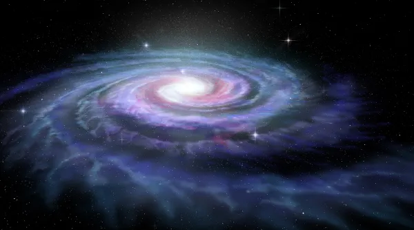
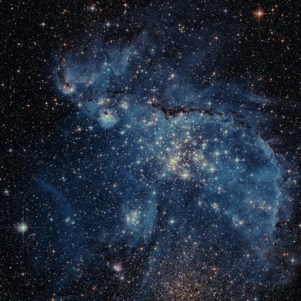

Galáxia
As galáxias são conjuntos de estrelas, poeira, gases e matéria escura que formam o Universo. Elas podem ser elípticas, espirais, como a Via Láctea, ou possuir forma irregular
.webp)
"As galáxia são sistemas formados por milhares a trilhões de estrelas, poeira, gases e matéria escura. Sua classificação e identificação pode ocorrer de acordo com a forma, sendo assim elípticas, espirais ou irregulares (quando não possuem um contorno definido). A Via Láctea, galáxia em que vivemos, é uma das maiores da região do Universo conhecida como Grupo Local e segue em processo de evolução, o que ocasionará a sua colisão com a galáxia de Andrômeda."
curiosidades-sobre-sistema-solar
Tópicos deste artigos
- sobre as galáxia
- O que é galáxia?
- Tipos de Galáxia
- Quais as principais Galáxia?
- Formação de uma galáxia
- Evolução da galáxia
Resumo sobre as galáxias
- "Galáxias são sistemas ou conjuntos compostos por estrelas, gases, poeira e matéria escura
- A maioria das grandes galáxias possui buracos negros no seu centro.
- Elas são definidas de acordo com a sua forma, podendo ser espirais, elípticas ou irregulares.
- Entre as principais galáxias, temos a Via Láctea, na qual vivemos, Andrômeda, Galáxia do Triângulo e Nuvem de Magalhães.
- As galáxias evoluem com o passar do tempo, podendo interagir e até mesmo se fundirem.
O que é galáxia
Galáxias são sistemas formados por uma vasta quantidade de estrelas, poeira, gases e matéria escura. Esse conjunto de elementos é unido pela força da gravidade. Algumas galáxias, em especial aquelas de maiores dimensões, possuem grandes buracos negros no seu centro, como é o caso daquela em que vivemos, a Via Láctea.
As galáxias podem ocorrer e evoluir isoladamente ou agrupadas, passando por processos de interação e até mesmo colisão, o que dá origem a supernovas, estrelas e novos buracos negros. Elas se diferenciam ainda em extensão, forma e peso. A mais leve das galáxias, de acordo com a Administração Nacional da Aeronáutica e Espaço dos Estados Unidos, a Nasa, possui um bilhão de massas solares (Мʘ), enquanto as mais pesadas ficam em torno de 30 trilhões Мʘ. A massa solar é uma unidade de medida usada para calcular a massa de estrelas e galáxias, e corresponde a 1,99 x 1030 kg.
Tipos de galáxia
A classificação das galáxias é feita por meio da observação de seu formato. Identificam-se ao menos três tipos de galáxias: as elípticas, as espirais e as irregulares.
- Elípticas:possuem forma circular e achatada. As galáxias elípticas são integradas por uma menor quantidade de poeira e gás quando comparadas às demais. Possuem estrelas muito antigas, e há pouca ou nenhuma atividade de formação de novos astros. Algumas das galáxias elípticas são muito alongadas, e as maiores delas chegam a até 300.000 anos-luz de diâmetro, de acordo com a Nasa. As menores, chamadas de galáxias anãs, são, no entanto, mais comuns. Aproximadamente um terço das galáxias do Universo tem formato elíptico, como Andrômeda.

- Espirais:são as mais comuns e correspondem a dois terços de todas as galáxias conhecidas, uma delas a Via Láctea. As galáxias espirais possuem uma forma que se assemelha a um disco, composto por braços que a circundam, os quais podem sair diretamente de uma região central, denominada núcleo (espirais normais), ou de uma barra de estrelas que atravessa o seu centro (espirais barradas). Aparecem com uma cor branco-azulada e são compostas por gases, poeira e estrelas, havendo intenso processo de formação de novos astros no seu interior.

- Irregulares: como o próprio nome sugere, as galáxias irregulares não possuem um formato definido que permita uma classificação mais pormenorizada. São formações muito antigas, que apareceram anteriormente às elípticas e espirais. Elas são formadas por poeira e gases, e a sua forma irregular ocorre em função da influência do campo gravitacional de outras galáxias localizadas na sua proximidade. De acordo com a Nasa, esse tipo de galáxia era o mais abundante no início da composição do Universo e, em função disso, aquelas observadas hoje em dia são muito antigas.

Quais as principais Galáxia ?
Estima-se que o Universo seja formado por um total de dois trilhões de galáxias, muitas delas ainda desconhecidas pela ciência. A descoberta mais recente foi publicada na revista Science, em fevereiro de 2021. Trata-se de uma galáxia formada há aproximadamente 1,2 bilhão de anos e que recebeu a denominação de ALESS 073.1. Há, no entanto, outras galáxias que são amplamente conhecidas e algumas podem ser vistas até mesmo a olho nu.
- VIa Lácteaé a galáxia em que está localizado o Sistema Solar e, portanto, onde vivemos. Sua forma corresponde a uma espiral barrada, com um núcleo brilhante e barras estelares de onde se projetam os seus braços. Ela possui 100.000 anos-luz de comprimento, o equivalente a 946 quadrilhões de quilômetros. Até o século XX, acreditava-se que ela estava localizada no centro do Universo, e as demais galáxias eram até então interpretadas como sendo nebulosas. Seu peso aproximado é de 1,5 trilhão Мʘ, e estima-se que a Via Láctea possua 200 bilhões de estrelas e um buraco negro de 4 milhões de massas solares no seu interior.
- Andrômeda: é a maior e mais brilhante galáxia próxima da Via Láctea e pode ser vista a olho nu. Por vezes, é chamada de Messier 31 (M31), uma vez que foi a 31ª das importantes descobertas feitas pelo astrônomo francês Charles Messier. Ela possui o dobro do diâmetro da Via Láctea, com 250 milhões de anos-luz. Ambas, em conjunto com a Galáxia do Triângulo, correspondem às maiores galáxias do que se conhece como Grupo Local, que é a região do Universo correspondente a um conjunto de 54 outros conglomerados estelares, incluindo galáxias anãs. Possui um trilhão de estrelas e massa de 1,2 bilhão M☉.
- Galáxia do Triângulo: conhecida também como Messier 33, é uma galáxia em espiral que faz parte do Grupo Local, com diâmetro de 60 mil anos-luz, portanto menor do que a Via Láctea, mas a terceira maior da região. É formada por 40 milhões de estrelas, e estima-se que a sua massa seja de 50 bilhões M☉.
- Nuvens de Magalhães:são duas galáxias satélites da Via Láctea. A menor delas se chama Pequena Nuvem de Magalhães e possui diâmetro de 7 mil anos-luz. A Grande Nuvem de Magalhães, por sua vez, mede 14 mil anos-luz de diâmetro, e ambas são consideradas galáxias anãs.
Ainda é difícil precisar quais os princípios que regem a formação das galáxias. Esse assunto é bastante debatido pelos astrônomos, e existem diversas teorias que procuram explicar como esses sistemas tiveram origem. Com relação ao período temporal, acredita-se que os primeiros aglomerados de estrelas e outros elementos começaram a se juntar 400 milhões de anos após a grande explosão que formou o Universo, chamada de Big Bang, que teria ocorrido há 13,8 bilhões de anos.
A principal teoria voltada à origem das galáxias explica que esses corpos tomaram forma a partir da intensa força gravitacional de um núcleo composto por matéria escura. O seu efeito causou a desintegração de nuvens em gases e poeira, que iniciaram um movimento orbital em torno desse núcleo, atraindo novos elementos e dando origem às estrelas. Esse processo originou grandes aglomerados que podem aparecer sem forma definida ou ainda como discos e braços conhecidos como galáxias.
Evolução da galáxia
As galáxias não são estáticas no tempo-espaço, e tampouco duram para sempre. Elas evoluem de forma isolada ou em grupo, o que é observado sobretudo por meio de sua forma e das cores que elas exibem. Aquelas que não interagem com outros corpos semelhantes vão gradualmente deixando de formar estrelas, e seu brilho se transforma de intenso para fraco com o passar do tempo, e a sua coloração aparece mais avermelhada.
Quando esses conjuntos interagem, o que ocorre é a sua colisão ou junção. Nesse processo não ocorre a destruição de corpos celestes, mas sim a interligação de um sistema com o outro, que pode ou não condicionar a formação de novas estrelas e supernovas, as quais fornecerão material para o surgimento de outras estrelas. Quando as galáxias se juntam, há transformação no seu formato, na sua massa e, é claro, na sua composição.